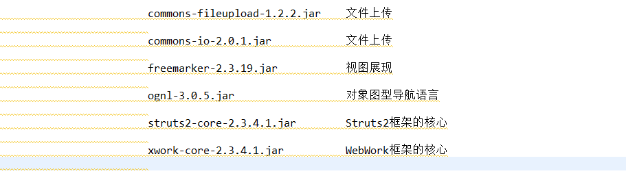

Struts2简介
1、Struts(金属支架)，在程序中表示起支撑作用的通用程序代码，Struts2是在Struts1框架的基础上融合了WebWork优秀框架升级得到的。
2、Struts2框架是一个轻量级的MVC流程框架，轻量级是指程序的代码不是很多，运行时占用的资源不是很多，MVC流程框架就是说它是支持分层开发，控制数据的流程，从哪里来，到那里去，怎么来，怎么去的这样一个框架；
3、Struts2框架改善的地方：核心基于Filter；流程可以动态扩展；多例创建对象；支持多种视图展现技术（JSP，Freemarker，Volicity）
Strut2的搭建
1、新建Web项目：进行必备Jar包的拷贝，放到lib目录以便项目的引用

2、拷贝框架的核心配置文件Struts.xml，放到src目录下，保留一个基本配置即可，这里没网的话需要我们自己配置一下xml文件对应的DTD或者schema文件，方便我们后期的编写：
3、然后在我们的web.xml文件中进行核心调度器的配置，这里我们一般过滤所有访问路径即可：
Struts2框架的源码分析
1、Tomcat等服务器启动时，框架做的事情：——>反射创建了StrutsPrepareAndExecuteFilter对象，相当于使用Struts2的一个准备对象吧，——>然后创建了Dispatcher(核心调度器),——>通过此对象，加载对象默认的配置文件（org/apache/struts2/default.properties），解析了默认的xml文件（struts-default.xml等），——>并试图加载我们编写的xml文件或者属性文件,——>并创建了我们需要用的PrepareOperations和ExecuteOperations对象。
2、当我们访问jsp页面时，这里会进行页面编码设置，反射创建我们的DefaultActionMapper对象，进行对URI的获取，解析，封装，由于是直接访问的jsp页面，也就是静态的，直接跳转，相对来说比较简单。
3、发送actin请求时，这里比较麻烦，——>利用DefaultActionMapper,进行对URI的获取解析，例如访问那个类，那个方法，是不是动态访问（带有！号），有什么特殊处理（有.x .y结尾等）。进行相关信息的解析后，——>Dispatcher（核心调度器）反射创建StrutsActionProxyFactory代理对象工厂，这里在反射创建我们要访问的类时，——>模仿了动态代理，创建了代理对象StrutsActionProxy和扩展对象DefaultActionInvocation，——>扩展对象又创建了我们的目标对象工厂，——>然后反射创建了我们想要访问的目标对象action。——>然后通过调用代理对象，执行扩展对象中的方法，——>执行我们框架默认的18个拦截器，——>反射调用访问action方法，——>获取执行后的结果result，——>最后进行相关界面或者action的指向。